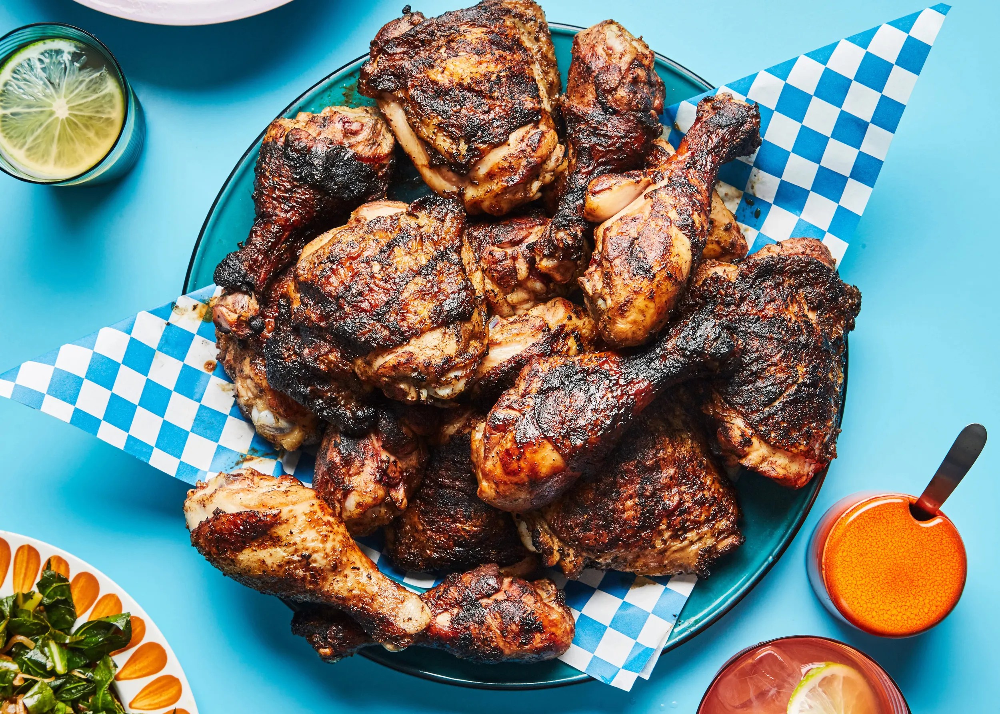

Jerk Chicken
Home

Description
These jerk chicken wings are so flavorful, different, and delicious that I
may have eaten my last Buffalo wing. Okay, I didn't mean that, but these
are amazing and have the perfect balance of sweet, sour, salty, and spicy.
I'm usually pretty casual about you changing my recipes, but I insist you
not change any of the key ingredients, which are every one of them.
Ingredients
- ½ yellow onion, chopped
- 3 habanero peppers, seeded and chopped
- ½ cup green onions, sliced
- ⅓ cup lime juice
- 3 tablespoons soy sauce
- 6 cloves garlic
- 2 tablespoons fresh thyme leaves
- 2 tablespoons brown sugar
- 2 tablespoons vegetable oil
- 1 tablespoon kosher salt
- 2 teaspoons ground black pepper
- 2 teaspoons ground allspice
- 1 teaspoon dried thyme
- ½ teaspoon ground cinnamon
- ½ teaspoon ground cumin
- ½ teaspoon freshly grated nutmeg
- 3 pounds chicken wing drumettes
- cooking spray
Steps
-
Place yellow onion, habanero peppers, green onions, lime juice, soy
sauce, garlic, fresh thyme, brown sugar, oil, salt, black pepper,
allspice, dried thyme, cinnamon, cumin, and nutmeg into a blender. Blend
until marinade is completely smooth.
-
Place chicken drumettes into a large bowl. Pour marinade over chicken
and toss to coat completely. Cover the bowl with plastic wrap and
marinate in the refrigerator for at least 8 hours to overnight.
-
Preheat the oven to 450 degrees F (230 degrees C). Line a baking sheet
with aluminum foil and coat with cooking spray.
-
Arrange chicken evenly on the prepared baking sheet; reserve marinade in
the bowl.
-
Bake in the preheated oven for 25 minutes. Brush 1/2 of the reserved
marinade onto chicken, then turn over. Bake for 15 minutes.
-
Turn chicken over and brush with remaining reserved marinade. Continue
baking until tender and caramelized, 10 to 15 more minutes. An
instant-read thermometer inserted near the bone should read at least 165
degrees F (74 degrees C). Rest chicken on the baking sheet for 5 minutes
before removing to a serving platter.